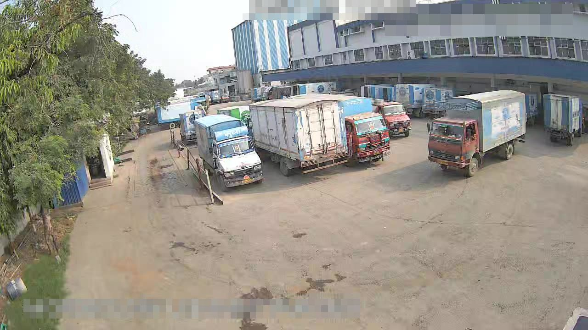
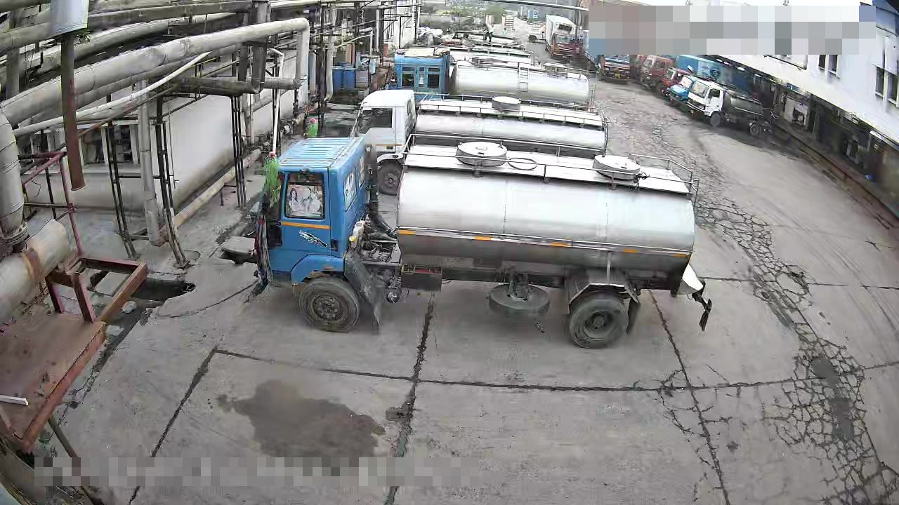
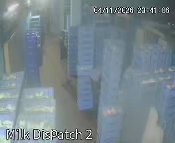

Editing a detector without training
Abhinav Gautam · 7 November 2026 · the detector on a dairy's cameras, measured on its own frames
A dairy runs ninety-five cameras over nineteen sites. Every one of them feeds a small YOLO detector that counts people and vehicles. The weights are the stock ones. I wanted to know how far that detector could be improved by editing its weights and its graph, and by a decision layer on top of its boxes, without training anything. The rule for the work was that every change is measured on the site's own frames before and after, and anything that cannot be measured does not ship.
This post is the account of five days of that. The short version: the detector was better than its counts suggested, most of the gain was in what we did with its boxes, and the two things I most wanted a new class for (a company livery, fire) came out very differently.
The setup
The model is YOLO26-small, exported end to end, 640 px input, one fixed output of 300 rows (box, score, class). The product keeps a person at score 0.35 and a COCO vehicle (bicycle, car, motorcycle, bus, truck) at 0.28 with a minimum area and a cross-class dedup. I run it exactly that way in a small Python harness so that a number here means what the product would do.
The data is the product's own training frames: one counted peak per camera per quarter hour and one frame per hour, with the boxes the detector drew. Those boxes are the current model's answer, not ground truth. The first measurement was simply how often my run agreed with the product's boxes on 230 frames from 117 cameras.
The 18 % of disagreement was not wrong objects. It was boxes at 0.28 to 0.40 flipping across the threshold on sub-pixel decode differences, so a frame counted three trucks in one run and two in the next. A quarter of all boxes sat below 0.45. That told me where the first gains were: not in the convolutions, but in the last layer and in the decision taken on its output.

Edit 1: one vehicle score instead of five
The class head is a 128→80 matrix per pyramid level, then a sigmoid, a max over classes and a top-300. A truck seen from behind often scores 0.22 as truck, 0.18 as bus and 0.12 as car. The product took the max, 0.22, and rejected all three. The evidence that it was a vehicle was spread over five rows.
The edit folds the five vehicle rows into one score before the top-300, a noisy-OR over the five sigmoids, reported as class 7. The other four rows are zeroed. The output contract does not change, so the server and the browser run the edited file as they ran the stock one.
On the 230 baseline frames the merge gave 20 more vehicle boxes (233 to 254), lost none, left every person box identical, and cost no latency. I looked at all twenty. Eighteen were real, including a rear-facing truck at Gaya of exactly the kind that had been reported missing. Two were doubtful: a sliver at Nalanda and a wall at Samastipur.
| Merge, 230 frames | Before | After |
|---|---|---|
| Vehicle boxes | 233 | 254 |
| Vehicle boxes lost | 0 | |
| Person boxes changed | 0 | |
| New boxes real by eye | 18 of 20 |
Count what persists, not what flickers
The second gain was not in the model at all. The product counted boxes per frame. A person dipping to 0.30 for one frame vanished and came back; one far-off person was sometimes answered with two boxes at IoU 0.98, and the product removed only cross-class overlaps, so it counted both. I wrote a decision layer with three old pieces: same-kind duplicate suppression, score hysteresis (a track starts at the product threshold and is kept down to 0.20), and persistence (two sightings before it counts, held 1.5 s after the last).
The duplicate threshold came out of the data rather than a default. On a quiet camera, 46 of the 55 overlapping person pairs at IoU ≥ 0.9 were one person boxed twice. On a crowded loading bay, pairs at 0.5 to 0.85 were different people sitting together. So the person dedup is 0.9, and vehicles, where nested boxes of one truck overlapped down to about 0.8, got 0.7.
I measured it on ten-minute daytime clips at two frames a second, with no ground truth, using two flicker measures: how often the count changes per minute, and blips, excursions that return within a second, which a real arrival or departure never does.
| People count, 10 min at 2 fps | Changes/min raw | decided | Blips raw | decided |
|---|---|---|---|---|
| Quiet camera (Jamui, one person now and then) | 15.9 | 6.9 | 55 | 6 |
| Busy loading bay (Muzaffarpur, up to 13 people) | 46.2 | 30.0 | 132 | 56 |
The busy bay still moves thirty times a minute after the layer, and some of that is real: thirteen people loading a truck do come and go. What the layer removes is the sub-second noise, and it removes most of it on both cameras.
The nested-box rule
Vehicles had a second kind of duplicate that IoU does not catch. The merged model would box a tanker, and also its cab, and sometimes a group box round a tanker and the van beside it. A part box is one that lies at least 80 % inside a stronger box of the same kind. A group box is one holding two or more boxes that are each 80 % inside it and not inside each other, when those members are all stronger than it, or each at least 15 % of its area. Both are dropped. On the yard clips this fixed 118 wrong frames; about 52 remain, mostly cab and rear boxes that are not 80 % inside anything.
Yard mode
With the merge in, what the detector still missed on the yards sat at scores 0.10 to 0.28: box-truck rears and sides, pickups, a milk van. On 346 daylight yard frames from four sites that band held 811 boxes, 72 distinct objects, and by eye about 60 were real trucks against about 6 false (a person at a door, crate stacks, a hose). On a true truck yard the band is about 90 % real. The product's single threshold was the thing in the way.
Across all cameras it is not 90 %. I ran the band over 436 daylight frames from 104 cameras, collapsed repeats of a parked truck into distinct objects, and judged every camera with three or more distinct gained boxes from crop sheets.
So yard mode is per camera: a vehicle cut-off of 0.12 with the nested rule, switched on only where the measurement said so. The false boxes that remained were mostly fixed things: a window above a bay, crate stacks, a hose on the floor, a wall sliver at the frame edge. Eight small ignore zones over fourteen cameras, drawn only round those and never where trucks park, took the false distinct objects from 11 to 3 and precision from 0.83 to 0.90. Of the three left, two are transient specks and one sits beside a parked pickup and cannot be zoned.
The per-camera table is the thing I would show anyone who asks whether a lower threshold is safe. The answer is a column, not a number.
| Camera | Frames | Veh/frame (product) | Gained | Real | Dup | False | Precision, before → after zones | False/day, before → after | Yard mode |
|---|

Far-off people
People at the far end of a yard are a few pixels tall at 640 and many at the camera's full resolution. Running the full frame plus a 2×2 grid of overlapping crops, each at the model's input size, and merging boxes that overlap at IoU ≥ 0.5, found about 70 more real people per 230 frames. It costs five passes instead of one. The tiles contribute people only: the vehicles they found were fragments of trucks that the full frame already had whole. It is on by default now, on the server, where five passes are affordable.
What failed, in numbers
Four things did not earn their place. I think the numbers are more useful than the ones that did.
| Tried | Measured | Decision |
|---|---|---|
| Smaller input, 512 px (the graph's baked reshapes and anchor grids regenerated) | A third faster; loses 8 % of people and 20 % of vehicles | Not adopted |
| INT8 dynamic quantisation | 10 MB instead of 38, but 207 ms against 111 ms on CPU, and 60 % count agreement with fp32 | Dropped |
| A Comfed livery row from the detector's own 128-d features | Leave-one-site-out 0.81 to 0.83 on 319 crops from 16 sites; confuses coloured-cab tankers with the livery, misses night and sliver crops | Replaced, see below |
| A fire and smoke row, closed form, from labelled fire pictures plus the site's night frames as hard negatives | Sees large fires (0.61 of their cells) but only about half of held-out fire images at zero false alarms on 367 unseen site frames | Not deployed |
The fire row is the one I would have liked to work. The frozen features know what a flame looks like well enough to light up most of a big fire, and not well enough to be trusted on a small one. My rule for fire was no false alarm on the site, and at that setting it misses half, so it waits.
The Comfed livery
The dairy's own trucks carry a blue-and-white livery. Telling them from other vehicles was a wanted class, and the natural way to add one without training is a closed-form direction (LDA with shrinkage) in some frozen feature space, applied as one dot product. In the detector's own feature space it topped out at 0.81 to 0.83 held out, above. The detector was built to tell a truck from a bus, not one paint job from another.
The product also has a cutout search: every detector box is embedded by a CLIP image tower so that it can be searched by sentence or by example. The same prototype in that space works. On 319 labelled daylight crops from 16 sites, leave-one-site-out accuracy is 0.875 with the quantised vision model that ships (0.91 with fp32). The misses are mostly night crops with no colour in them. It is deployed as one dot product per vehicle cutout against a stored 512-d direction. A live check of the top-ranked Comfed cutouts after deployment gave about 26 of 29 right by eye.

Camera health from image statistics
Not every miss is the model's. On the first night of pulling frames, one site's dome cameras had fogged, and two channels were returning coloured bands. I wrote nine checks that use no model at all: each frame is reduced to 320×180 and a handful of statistics, judged against that camera's own history (its median edge layout and sharpness from the frames nearest in time, so day and night each have their own reference). The conditions are black, blocked, blurred, fogged, over-exposed, moved, frozen, infrared by day and corrupt.
On that night the checks flagged 8 fogged channels and 2 with bands at the one site. Judged by eye, fog was right on 18 of 23 flagged frames and bands on 4 of 4. The fog misses were a soft, low-resolution picture of a lit room that reads as haze to the statistics.

A spill
A milk spill on a tanker pad is the event the dairy most wants an alarm for, and in five days of frames there was exactly one. A floor-change scanner found it: the background of a camera is the median of its frames closest in floor brightness from other hours, and a candidate is a pale, smooth, new region outside the vehicle boxes. The scanner is coarse and it did not fire on the event by itself; it put the frame on a review sheet, and the stream was visible by eye, two pixels wide at the scanner's resolution. Khagariya, the tanker pad, 14:05 to 14:28 on 4 November.
With one event I can measure separability but not generalisation. A closed-form row on the detector's pooled features, fitted on the first half of the event and the first half of a dry clip of the same camera, finds the spill in 92 % of the later frames with 2 false alarms on 412 frames from other cameras it never saw. That is a row that can see this spill on this pad. Whether it sees the next spill on another pad is a question the data cannot answer yet, so the scanner keeps running and the row waits.
What is thin, and what comes next
Some of these measurements rest on one daylight day. The yard-mode table is 5 November only, with one to nine frames per camera, and a parked truck that moved counts twice. The livery prototype's held-out number is 16 sites, most of them with a few dozen crops. The fire row's held-out sets are public fire pictures, not the site's. The spill has a sample size of one.
Next, in order: more daylight days through the yard table to see which of the 12 cameras hold their precision; the livery row re-fitted as night crops arrive, since night is where it misses; and the fire row kept at zero false alarms while I look for the setting where it sees small fires too. None of it needs training. All of it needs frames.
Method notes. Every number above was produced by a script in a private repository against the site's own frames, and the before and after of each change ran on the same frames with the same code. Faces in the pictures are blurred. Camera captions are the cameras' own.